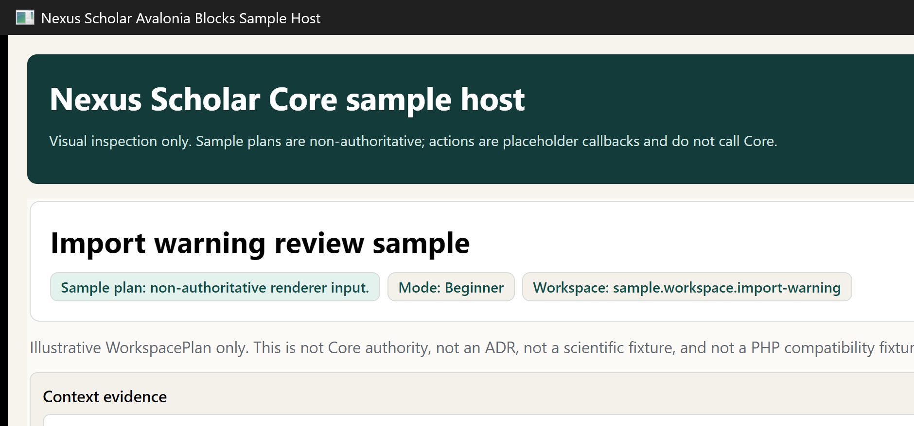
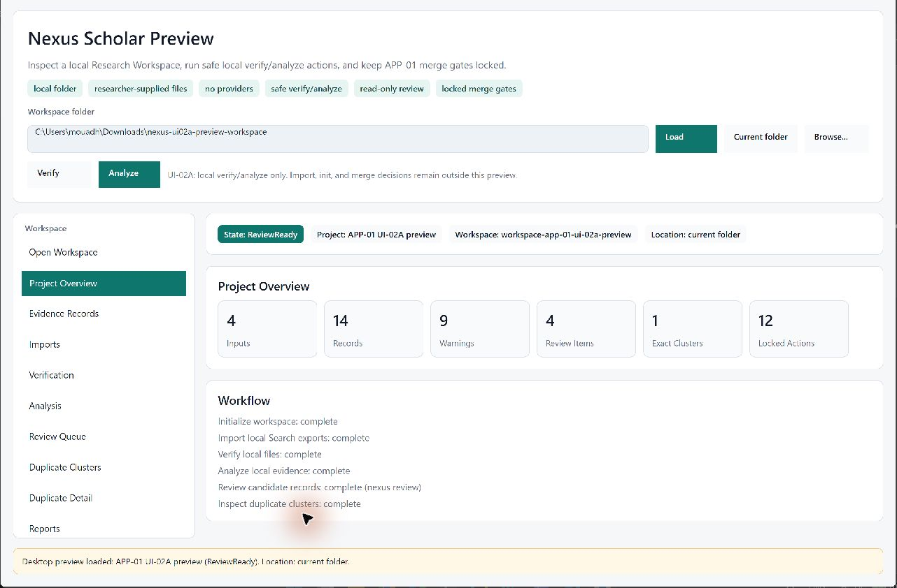
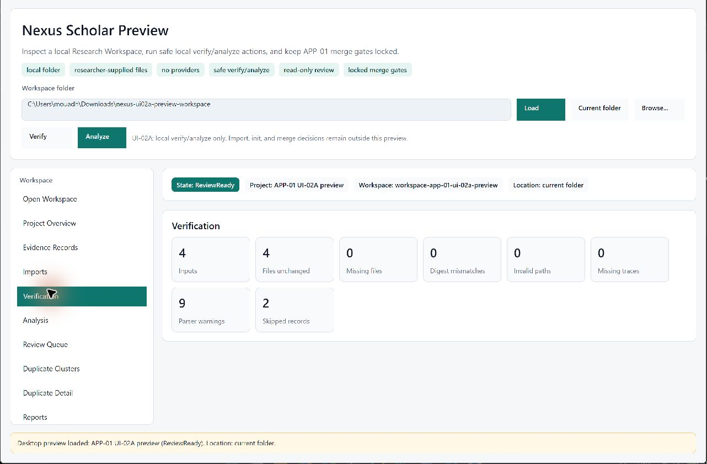
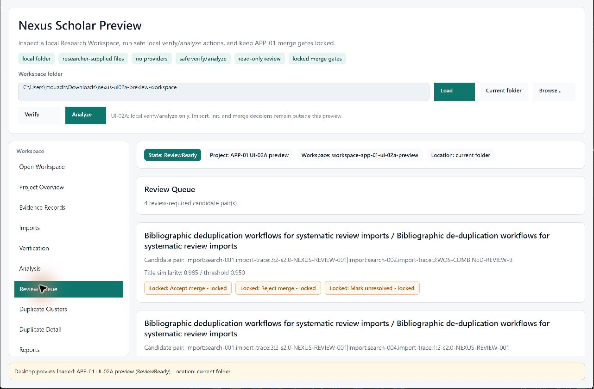
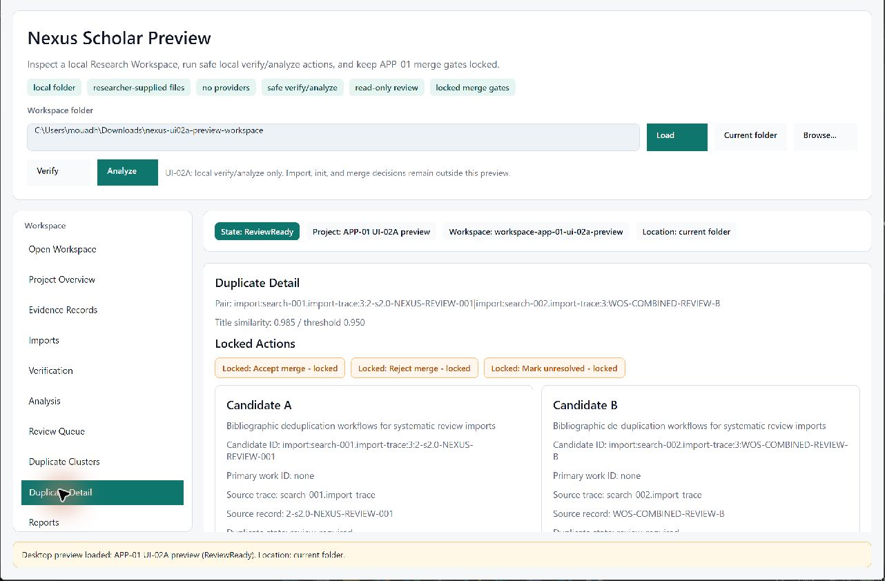

First-tester walkthrough
Run Nexus Scholar Core in 10 to 15 minutes
This walkthrough is for developers, methodologists, and early research-tool testers who want to inspect the current local Core surface and report useful feedback. It is not a researcher production workflow.
Before you start
You need Git, PowerShell or another terminal, and a .NET SDK that can build net10.0. The commands below use PowerShell syntax, but the same dotnet commands work from other shells.
Use the repository's current main branch. The issue templates, deterministic local demo, and local Research Workspace CLI workflow are merged there.
1. Clone the repository
git clone https://github.com/nexus-scholar/core-csharp.git
cd core-csharp
git switch main
git pull origin mainThis gives you the C# Core workspace, the CLI, the sample host, module docs, tests, and local conformance fixtures.
2. Verify the workspace
dotnet restore NexusScholar.Core.slnx
dotnet build NexusScholar.Core.slnx -c Release --no-restore
dotnet test NexusScholar.Core.slnx -c Release --no-build
dotnet format NexusScholar.Core.slnx --verify-no-changes --no-restoreIf one of these commands fails, open a bug report and include the exact command, operating system, .NET SDK version, expected result, and actual result.
3. Run the CLI path
The CLI is a local inspection surface. It is useful for first feedback because it exercises implemented contracts without calling live services.
dotnet run --project src/NexusScholar.Cli -- doctor
dotnet run --project src/NexusScholar.Cli -- sample
dotnet run --project src/NexusScholar.Cli -- demoThe doctor command prints local environment and policy information. The sample command walks a small protocol, workflow, provenance, and bundle-verification path. The demo command shows deterministic local Search-import and Deduplication evidence using embedded sample bytes.
Expected stable demo summary:
Nexus Scholar Core local demo
Mode: deterministic local sample
Network: none
Live providers: none
Persistence: none
Import source: scopus-csv
Imported records: 5
Search sightings: 4
Parser warnings: 2
Source digest scope: raw-artifact-bytes
Dedup raw candidates: 4
Dedup exact clusters: 1
Dedup review-required pairs: 1
Non-claims: no live providers; no provider SDKs; no persistence/API/cloud; no PDF/OCR; no PHP compatibility4. Run the local Research Workspace workflow
This path creates a throwaway local Nexus project folder, imports generated local Search-export fixtures, verifies the files, analyzes Search and Deduplication evidence, then shows the read-only review queue and duplicate clusters.
The fixture files are generated local test data. They are not Scopus exports, not Web of Science exports, not Google Scholar scrapes, not conformance fixtures, and not scientific authority.
Remove-Item -Recurse -Force .nexus-demo -ErrorAction SilentlyContinue
New-Item -ItemType Directory -Force .nexus-demo/workspace | Out-Null
Push-Location .nexus-demo/workspace
dotnet run --project ../../src/NexusScholar.Cli -- init --title "APP-01 demo review"
dotnet run --project ../../src/NexusScholar.Cli -- import search ../../tests/NexusScholar.AppServices.Tests/Fixtures/App01GeneratedLocalBundles/bundles/FB07-combined-app01-demo/combined_scopus_like.csv --source scopus --format csv --query-id search-001 --query "systematic review screening software"
dotnet run --project ../../src/NexusScholar.Cli -- import search ../../tests/NexusScholar.AppServices.Tests/Fixtures/App01GeneratedLocalBundles/bundles/FB07-combined-app01-demo/combined_wos_like.ris --source web-of-science --format ris --query-id search-002 --query "systematic review screening software"
dotnet run --project ../../src/NexusScholar.Cli -- import search ../../tests/NexusScholar.AppServices.Tests/Fixtures/App01GeneratedLocalBundles/bundles/FB07-combined-app01-demo/combined_scholar_style.bib --source google-scholar --format bibtex --query-id search-003 --query "systematic review screening software"
dotnet run --project ../../src/NexusScholar.Cli -- import search ../../tests/NexusScholar.AppServices.Tests/Fixtures/App01GeneratedLocalBundles/bundles/FB07-combined-app01-demo/combined_wos_like_source_specific.csv --source web-of-science --format csv --query-id search-004 --query "systematic review screening software"
dotnet run --project ../../src/NexusScholar.Cli -- verify
dotnet run --project ../../src/NexusScholar.Cli -- analyze
dotnet run --project ../../src/NexusScholar.Cli -- review
dotnet run --project ../../src/NexusScholar.Cli -- clusters
dotnet run --project ../../src/NexusScholar.Cli -- clusters exact
dotnet run --project ../../src/NexusScholar.Cli -- clusters review
dotnet run --project ../../src/NexusScholar.Cli -- clusters show dedup-candidate-0001
Pop-LocationThe combined demo bundle intentionally includes parser warnings and skipped records. verify surfaces those issues before analyze; continue so you can inspect warning, deduplication, and human-gate blocks.
Workspace analysis complete
Mode: Review
WorkspacePlan: nexus-output/workspace/current.workspace-plan.json
Deduplication result: nexus-output/dedup/current.deduplication-result.json
Review report: nexus-output/reports/review.md
Next: nexus review
Review queue
Mode: Review
Blocking
4 human merge decisions require review
Review-required duplicate candidates
[dedup-candidate-0001]
Show: nexus clusters show dedup-candidate-0001
Candidate: dedup-candidate-0001
Status: review required
APP-01 action
Human merge decision required.
This CLI version only displays the decision gate.The review and cluster commands are read-only. They display APP-01 merge gates but do not accept, reject, mark unresolved, or execute merge decisions.
5. Inspect the sample host
dotnet run --project samples/NexusScholar.Avalonia.Blocks.SampleHostThe sample host is a visual inspection harness for non-authoritative WorkspacePlan JSON rendered through NexusScholar.UiContracts and NexusScholar.Avalonia.Blocks. It is not a product desktop app, not an app-service layer, and not a Core command surface.

Look for whether the blocks, evidence references, validation references, and placeholder action labels make sense to you. If the visual language is confusing, file documentation or UI feedback rather than treating the sample host as a finished workflow.
6. Inspect the desktop preview
After the local Research Workspace workflow has produced .nexus-demo/workspace, you can inspect the same generated local outputs in the desktop preview and run the safe local UI-02A actions.
dotnet run --project samples/NexusScholar.Desktop.Preview -- ".nexus-demo/workspace"The desktop preview can run local Verify and Analyze actions through shared ResearchWorkspace services. It does not run init, run import, accept/reject merge decisions, mark records unresolved, mutate Core records beyond existing generated-output writes, call providers, or create a product desktop shell.

Verify / Analyze buttons visible.


What this proves
- The repository builds and tests locally on your machine.
- The Core contracts can be exercised without network access.
- The CLI can show environment policy, a small protocol/workflow/bundle path, deterministic import/dedup evidence, and a read-only local Research Workspace review queue.
- The sample host can render contract-shaped workspace blocks without giving the renderer Core authority.
- The desktop preview can inspect generated local Research Workspace outputs and run safe local verify/analyze actions without executing merge decisions.
- The project is ready for architecture, onboarding, methodology, and workflow-boundary feedback.
What this does not prove
- It does not prove production readiness for running a real systematic review.
- It does not prove live provider access, provider SDK support, Scopus or Web of Science API support, or Google Scholar scraping.
- It does not prove HTTP download, paywall bypass, shadow-library behavior, PDF extraction, or OCR.
- It does not prove persistence, API, cloud sync, collaboration, or a product desktop shell.
- It does not make the desktop preview an init/import wizard.
- It does not execute merge accept, reject, or mark-unresolved decisions from APP-01 blocks.
- It does not make the desktop preview a source of scientific authority.
- It does not prove PHP compatibility. That requires generated fixtures and semantic comparators.
- It does not make AI outputs scientifically authoritative. Suggestions remain proposals until an authorized human action accepts them.
Send useful feedback
After running the walkthrough, open the issue type that best matches what you found. Include exact commands and outputs when possible.
- First tester run for setup, command, or walkthrough feedback.
- Architecture boundary review for Core authority, dependency, or non-claim concerns.
- Research workflow use case for real workflow pain points Nexus should eventually understand.
- Documentation confusion for unclear, stale, or contradictory docs.
- Bug report for reproducible local failures.